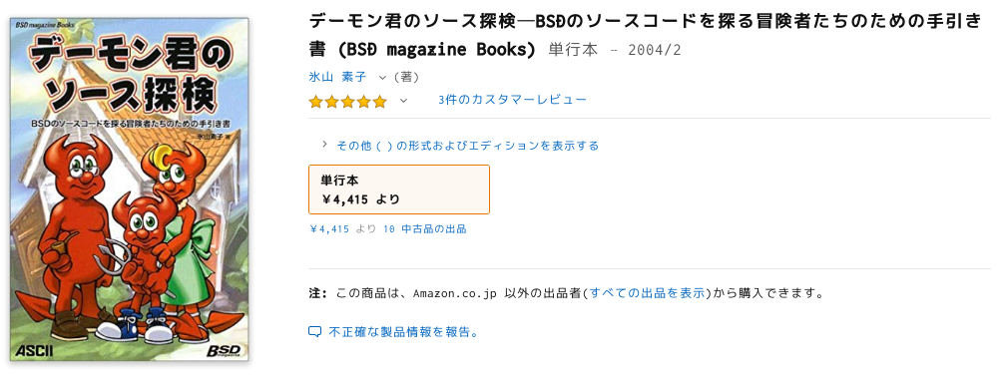
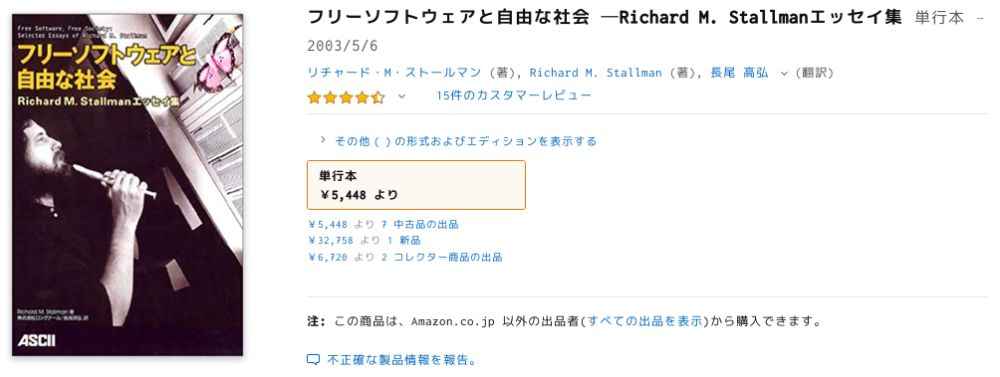
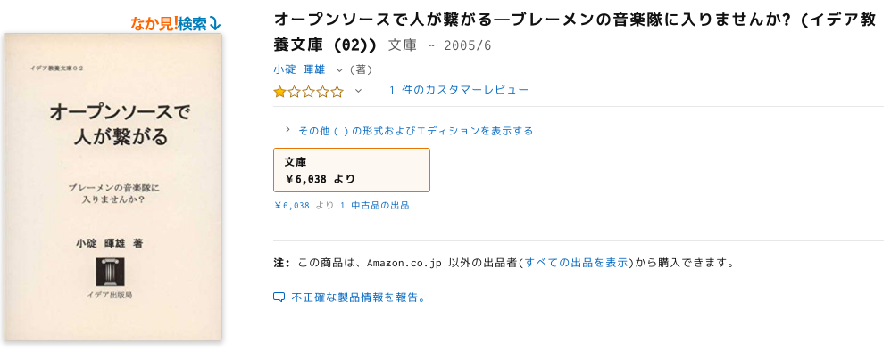

FLOSS書籍について
本稿は筆者がFLOSS書籍を集める中で感じたことを文章に起こそうというものです。
FLOSS（Free Libre Open Source Software）には、著作権に基づきその成果物を利用・ 再利用・再頒布される道具としての面と、その成果物を取り巻くコミュニティ・文化・思想を楽しむ面があります。そしてこれらは対立しているわけではなく、各プロジェクトや各開発者によって比重を変化させながら共存しています。FLOSSはただの利用者だがFLOSSに関係したイベントやカンファレンスには積極的に参加する人もいれば、FLOSS開発には夢中だけれどもイベントの類には滅多に来ない人もいます。その両方をうまい配分で楽しむ人もいるでしょう。
FLOSS文化発展の鍵は草の根コミュニティとインターネットにあります。特にインターネットは重要なインフラですが、情報を発信する手間よりもその情報を保存し続けたり情報を掘り当てたりする手間のほうがかかります。そのような中で、発表されては忘れ去られていく同人誌・スライド資料・ブログ記事などを過去十数年にまで遡って集めるのはほぼ不可能に近いですし、やるにしても膨大な時間とコストがかかります。したがってFLOSS文化を順序よく解釈していく手っ取り早い方法は、それら泡沫的な文献を諦め紙に印刷された出版物を集めることです。FLOSS文化の参考文献にはEric S. Raymondの『伽藍とバザール』やRichard M. Stallmanの『フリーソフトウェアと自由な社会』が例として挙げられます。
一方でFLOSS関係の書籍は著作権の都合で、作者がGNU Free Documentation License（GFDL）やなにかしらのCreative Commonsを適用していない限り再頒布できません。本を集めるにはお金がかかり、その本の価格は中古市場の経済によって決定されます。このような障壁についても少し述べたいと思います。
2019年からみたFLOSS書籍最盛期
FLOSSの技術書はいまでも頻繁に出版されています。一方でFLOSS文化の評論やエッセイはまったく見当たりません。FLOSSが基盤として欠かせない存在になり、FLOSSが湯水のごとく流通している現在では、わざわざ本を書いてまでFLOSSの意義やビジネスモデルなどを説明する必要がなくなったのかもしれません。
FLOSSについて書かれた日本語の書籍は2000年代前後あたりが出版のピークのように見えます。根拠は僕が所有しているFLOSS系の書籍がほとんどその年代に出版されていることです。弱い根拠かもしれませんが、Amazonで「オープンソース」と調べて出てくるものはおおよそ揃えているので、大きく的を外した見解ではないでしょう。また「オープンソース」という言葉そのものが産まれたのは1998年2月3日です。オープンソース運動が日本にまで伝播し、書籍が執筆・翻訳されて出版される時間を考えると、ちょうど良さそうな時期でもあります。
古いFLOSS書籍は読むに値するか
一方で2000年代前後というと19〜10年前の時代です。技術が進歩していく速度から「ドッグイヤー」とも呼ばれるような業界からすれば、古さという欠点がどうしても浮かび上がってしまいます。IT業界はモダンな開発手法やプログラミング言語がもてはやされやすいという体質もあり、それがこの欠点をなお引き立たせています。
しかしFLOSSの文化や思想あるいはビジネスモデルの転換は、プログラミング言語やフレームワークなどと比べると、比較的ゆっくりとした速度で進んでいるのが現実です。GNU General Public License（GPLv1）は1989年に発行されましたが、最新バージョンであるGPLv3は2007年に発行されました。単純に、GPLはFLOSSをとりまくビジネスモデルや法律の変化に応じて改訂されていると考えるのであれば、過去30年間で2回しか改訂がなかったGPLはこの主張の裏付けとなるでしょう。
またFLOSS文化の根底にある「共有」の文化は様々な分野へ浸透していきました。たとえば自身の作品に対してCreative Commons License（CC License）を任意のレベルで適用することで、再利用や再頒布の条件を明確にしたまま作品を流通させられるようになったのです。FLOSS文化だけを根として発展したかどうかは断言できませんが、オープンデザインやオープンサイエンス、デジタルファブリケーションといったムーヴメントも、根底には「共有」の文化があります。
思想的にも大きなパラダイムはまだないように思えます。StallmanのFree Software運動から、商業プロモーションを目的としてOpen Source運動が広まりました。Stallmanが、中立になりたければFLOSSという言葉を使うよう推奨した（『FLOSS and FOSS』）のは最近の話（初版がいつアップロードされたのかは不明。Copyrightの年をみるにおそらく2013年）ですが、根底の思想には大した影響はありません。
古いFLOSS書籍は読むに値するか？という疑問に対しては次のように答えられます。技術と違ってパラダイムは滅多に変わらない点、現代の「共有」の流行に少なくともFLOSS文化が一役買っている点を考慮すると、十数年前の書籍でも読む値打ちは十分にあります。
価格・流通という問題
古い書籍でも読む価値は十分にあるとした上で、次に問題となるのは価格です。当然、多くを中古市場から買うことになります。が、本によっては定価よりも高い値段がつけられています。
たとえば氷山素子『デーモン君のソース探検』は2004年に出版され税抜き価格2200円で発売されていましたが、現在Amazonでは最低価格が4415円です。
Stallman『フリーソフトウェアと自由な社会』は2003年に出版され税抜価格3200円でしたが、同じくAmazonでは5448円から売り出されています。
内容の優劣に関わらず「とりあえず希少そうだから」といった感じで値段付けされている場合もあります。小碇暉雄『オープンソースで人が繋がる』はFLOSS書籍の中で特に重要な古典でも、優れたFLOSS観が述べられているわけでもありませんが、定価525円から中古価格6038円へ大高騰しています。
これらは極端な例で、ほとんどは定価以下の価格で購入できます。しかしこれらのような例もあるので、いまは安くても、FLOSSについて語る本は時間が経つにつれてプレミアがつきどんどん高騰していくという懸念もできます。本来は文化・知識の共有のために印刷された本が、中身よりもその本自体の希少性に目をつけられ高値で中古市場で売買されてしまいます。このような傾向は、FLOSS文化研究をする身からすれば危機と言えます。
出版物は自由であるべき
フリーソフトウェア運動をきっかけに「共有」の文化が根付き、様々な分野へ枝分かれしていきました。FLOSS文化とはなにか、現代の「共有」ムーヴメントを根底から見直すにはどうすればいいかを考えたとき、FLOSS書籍を読み直してみるのはアプローチのひとつとして有効であると考えられます。一方で書籍は中古市場でのプレミア付けが始まっており、経済的に手を出しづらくなっています。
FLOSS書籍について俯瞰した最後に、商業・個人出版に関係なくFLOSS書籍はすべてクリエイティブ・コモンズライセンスの下に使用許可を与えるべき、あるいは利用・再頒布のための条件を明記しておくべきだと主張します。本のテキストを共有する活動はいまに始まったものではありません。Stallman『フリーソフトウェアと自由な社会』は各エッセイに対して「本文に一切の変更を加えず、この著作権表示を残す限り、この文章全体のいかなる媒体における複製および頒布も許可する。」と利用条件を明記しています。Sam Williams『FREE AS IN FREEDOM』（2002）はGFDLの下に出版されており、オライリーの『プログラマ／プロジェクト・マネジャー／ソフトウェアアーキテクトが知るべき97のこと』シリーズはそれぞれのエッセイがクリエイティブ・コモンズ表示3.0です。
この主張をするモチベーションは、第一にほとんどのFLOSS書籍を出版社が再版せず、流通を中古市場に任せている点。第二に著者の利益がないにも関わらず中古市場で書籍の価格が高騰している点。第二に再版の望みがないのに関わらず無駄に長い著作権保護期間によって不特定多数への再頒布が困難な点からきています。Lawrence Lessigが「ほとんどの創造的作品が実際に持っている商業的な寿命はほんの数年だ。ほとんどの本は一年で絶版になる。その後、古本は著作権規制とは関係なしに取引される。」（『FREE CULTURE』, p164）と述べているように、どうせ商業的な寿命が短いのであれば最初から再頒布のための条件を明確にしておいて、少数の後人のために権利を緩めておけばいいのです。
コミックマーケット以外にも技術書典や技術書同人誌博覧会といった個人が技術書を出版し販売できる場が増えた現在、これは特に声を大にして呼びかけたいことです。同人誌の電子版を委託販売できるサービスもあるので中古市場に関する議論は成立しませんが、著者が執筆を止めて委託販売も止まったとき「どう再頒布するか？」という問題が残るでしょう。
文化継承のためにできることのひとつに、あなたが持っている過剰な権利を緩めるというものがあります。物書きをしたときどのような権利が与えられるのか、その権利にはどのような負の側面があるのか、それを解決するにはどう行動すればいいのかをFLOSS文化の文脈で考え直してみてはどうでしょうか。